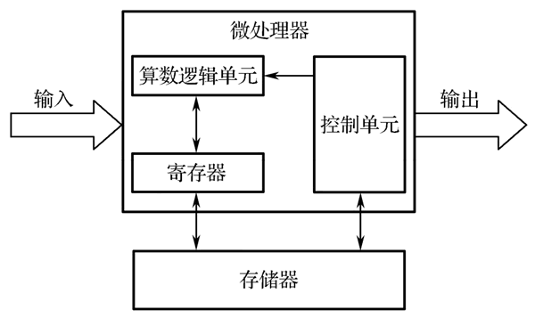

首页 > 编程笔记
什么是嵌入式系统
随着计算机技术的飞速发展和嵌入式微处理器的出现，计算机应用出现了历史性的变化，逐渐形成计算机系统的两大分支：嵌入式系统和通用计算机系统。
早期，嵌入式系统曾被称为嵌入式计算机系统或隐藏式计算机。随着半导体技术及微电子技术的快速发展，嵌入式系统得以风靡式发展，性能不断提高，以致出现一种观点，即嵌入式系统通常是基于 32 位微处理器设计的，往往带操作系统，本质上是瞄准高端领域和应用。然而，随着嵌入式系统应用的普及，这种高端应用系统和之前广泛存在的单片机系统间的本质联系，使嵌入式系统与单片机毫无疑问地联系在了一起。
不同嵌入式系统具有一定的差异。一般来说，嵌入式系统有以下特点：
1) 嵌入式微处理器（Embedded Microprocessor Unit，EMPU）以通用计算机中的标准 CPU 为微处理器，并将其装配在专门设计的电路板上，仅保留与嵌入式应用有关的母板功能，构成嵌入式系统。
与通用计算机相比，嵌入式微处理器的系统体积和功耗大幅度减小，而工作温度的范围、抗电磁干扰能力、系统的可靠性等方面均有提高。
在嵌入式微处理器中，微处理器是整个系统的核心，通常由 3 部分组成：控制单元、算术逻辑单元和寄存器，下图为嵌入式微处理器的示意图。
2) 嵌入式微控制器（Microcontroller Unit，MCU）又称单片机，以某一种微处理器为核心，芯片内部集成有一定容量的存储器（ROM/EPROM、RAM）、I/O 接口（串行接口、并行接口）、定时器/计数器、看门狗、脉宽调制输出、A/D 转换器、D/A 转换器、总线、总线逻辑等。
与嵌入式微处理器相比，嵌入式微控制器的最大特点是单片化、体积小、功耗低、可靠性较高。嵌入式微控制器是目前嵌入式系统工业的主流。
3) 嵌入式数字信号处理器（Embedded Digital Signal Processor，EDSP）对系统结构和指令进行了特殊设计，使其适合执行 DSP 算法，编译效率高，指令执行速度也较快。
在数字滤波、FFT、谱分析等方面，DSP 算法已广泛应用于嵌入式领域，DSP 应用正从在单片机中以普通指令实现 DSP 功能，过渡到采用 EDSP 实现相应功能。
4) 嵌入式片上系统是集系统性能于一块芯片上的系统级芯片，通常含有一个或多个微处理器 IP 核（CPU），根据需求也可增加一个或多个 DSP IP 核、相应的外围特殊功能模块，以及一定容量的存储器（RAM、ROM）等，并针对应用所需的性能将其设计集成在芯片上，成为系统操作芯片。
嵌入式片上系统的主要特点是嵌入式系统能够运行于各种不同类型的微处理器上，兼容性好，操作系统的内核小、效果好。
嵌入式操作系统负责嵌入式系统的全部软、硬件资源的分配、任务调度，控制、协调并发活动。它必须体现其所在系统的特征，能够通过装卸某些模块来达到系统所要求的功能。
目前在嵌入式领域广泛使用的操作系统有嵌入式实时操作系统 μC/OS-II、嵌入式 Linux、Windows Embedded、VxWorks 等，以及应用在智能手机和平板电脑上的 Android、iOS 等。
2) 软件运行环境，狭义上讲是指软件运行所需要的硬件支持；广义上也可以说是一个软件运行所要求的各种条件，包括软件环境和硬件环境。
比如，各种操作系统所需要的硬件支持是不一样的，对 CPU、内存等的要求也是不一样的。而许多应用软件不仅要求硬件条件的支持，还需要软件环境的支持，通俗讲就是 Windows 系统支持的软件，Linux 系统不一定支持，苹果系统的软件只能在苹果设备上运行，如果这些软件想跨平台运行，必须修改软件本身，或者模拟它所需要的软件环境。
与人们生活紧密相关的几个应用领域如下。
基于深度学习的嵌入式视觉技术也被用于智能城市环境中，在城市某些基础设施中，如街道交通、照明和电力供应，以实现数字网络化，以便为居民提供特殊服务。
此外，嵌入式人工智能技术也被广泛应用于智能家居系统，例如，数字语音助手和机器人真空吸尘器。
图 2 广泛的人工智能应用
早期，嵌入式系统曾被称为嵌入式计算机系统或隐藏式计算机。随着半导体技术及微电子技术的快速发展，嵌入式系统得以风靡式发展，性能不断提高，以致出现一种观点，即嵌入式系统通常是基于 32 位微处理器设计的，往往带操作系统，本质上是瞄准高端领域和应用。然而，随着嵌入式系统应用的普及，这种高端应用系统和之前广泛存在的单片机系统间的本质联系，使嵌入式系统与单片机毫无疑问地联系在了一起。
嵌入式系统的特点
嵌入式系统是先进的计算机技术、半导体技术、电子技术与各个行业的具体应用相结合的产物，这决定了它是技术密集、资金密集、知识高度分散、不断创新的集成系统。同时，嵌入式系统又是针对特定的应用需求而设计的专用计算机系统，也决定了其具有自己的特点。不同嵌入式系统具有一定的差异。一般来说，嵌入式系统有以下特点：
- 软/硬件资源有限，过去只在个人计算机（PC）中安装的软件，现在也出现在复杂的嵌入式系统中。
- 集成度高、可靠性高、功耗低。
- 有较长的生命周期，通常与所嵌入的宿主设备具有相同的使用寿命。
- 软件程序存储（固化）在存储芯片上，开发者通常无法改变。
- 是计算机技术、半导体技术、电子技术和各个行业的应用相结合的产物。
- 一般来说，并非总是独立的设备，而是作为某个更大型计算机系统的辅助系统。
- 通常都与真实物理环境相连，是激励系统。激励系统处在某一状态，等待着输入或激发信号，从而完成计算并输出更新的状态。
嵌入式系统的组成
嵌入式系统一般由硬件系统和软件系统两大部分组成。其中，硬件系统包括处理器、外设和必要的外围电路；软件系统包括嵌入式操作系统和软件运行环境。硬件系统
1、处理器
处理器是嵌入式系统硬件系统的核心，早期嵌入式系统的处理器由微处理器（甚至是仅包含几个芯片的微处理器）来担任，而如今嵌入式系统的处理器一般采用 IC（集成电路）芯片形式，可以是 ASIC（专用集成电路）或者 SoC（系统级芯片）中的一个核。嵌入式系统的处理器主要有以下几种：嵌入式微处理器（EMPU）、嵌入式微控制器（MCU，又称单片机）、嵌入式数字信号处理器（EDSP）、嵌入式片上系统：核是 VLSI（超大规模集成电路）上功能电路的一部分。
1) 嵌入式微处理器（Embedded Microprocessor Unit，EMPU）以通用计算机中的标准 CPU 为微处理器，并将其装配在专门设计的电路板上，仅保留与嵌入式应用有关的母板功能，构成嵌入式系统。
与通用计算机相比，嵌入式微处理器的系统体积和功耗大幅度减小，而工作温度的范围、抗电磁干扰能力、系统的可靠性等方面均有提高。
在嵌入式微处理器中，微处理器是整个系统的核心，通常由 3 部分组成：控制单元、算术逻辑单元和寄存器，下图为嵌入式微处理器的示意图。

图 1 嵌入式微处理器示意图
图 1 嵌入式微处理器示意图
2) 嵌入式微控制器（Microcontroller Unit，MCU）又称单片机，以某一种微处理器为核心，芯片内部集成有一定容量的存储器（ROM/EPROM、RAM）、I/O 接口（串行接口、并行接口）、定时器/计数器、看门狗、脉宽调制输出、A/D 转换器、D/A 转换器、总线、总线逻辑等。
与嵌入式微处理器相比，嵌入式微控制器的最大特点是单片化、体积小、功耗低、可靠性较高。嵌入式微控制器是目前嵌入式系统工业的主流。
3) 嵌入式数字信号处理器（Embedded Digital Signal Processor，EDSP）对系统结构和指令进行了特殊设计，使其适合执行 DSP 算法，编译效率高，指令执行速度也较快。
在数字滤波、FFT、谱分析等方面，DSP 算法已广泛应用于嵌入式领域，DSP 应用正从在单片机中以普通指令实现 DSP 功能，过渡到采用 EDSP 实现相应功能。
4) 嵌入式片上系统是集系统性能于一块芯片上的系统级芯片，通常含有一个或多个微处理器 IP 核（CPU），根据需求也可增加一个或多个 DSP IP 核、相应的外围特殊功能模块，以及一定容量的存储器（RAM、ROM）等，并针对应用所需的性能将其设计集成在芯片上，成为系统操作芯片。
嵌入式片上系统的主要特点是嵌入式系统能够运行于各种不同类型的微处理器上，兼容性好，操作系统的内核小、效果好。
2、外设
外设包括存储器、I/O 接口等辅助设备。尽管 MCU 已经包含了大量外设，但对于需要更多 I/O 接口和更大存储能力的大型系统来说，还需要连接额外的 I/O 接口和存储器，用于扩展其他功能和提高性能。软件系统
1) 嵌入式操作系统（Embedded Operating System，简称：EOS）是指用于嵌入式系统的操作系统，通常包括与硬件相关的底层驱动软件、系统内核、设备驱动接口、通信协议、图形界面、标准化浏览器等。嵌入式操作系统负责嵌入式系统的全部软、硬件资源的分配、任务调度，控制、协调并发活动。它必须体现其所在系统的特征，能够通过装卸某些模块来达到系统所要求的功能。
目前在嵌入式领域广泛使用的操作系统有嵌入式实时操作系统 μC/OS-II、嵌入式 Linux、Windows Embedded、VxWorks 等，以及应用在智能手机和平板电脑上的 Android、iOS 等。
2) 软件运行环境，狭义上讲是指软件运行所需要的硬件支持；广义上也可以说是一个软件运行所要求的各种条件，包括软件环境和硬件环境。
比如，各种操作系统所需要的硬件支持是不一样的，对 CPU、内存等的要求也是不一样的。而许多应用软件不仅要求硬件条件的支持，还需要软件环境的支持，通俗讲就是 Windows 系统支持的软件，Linux 系统不一定支持，苹果系统的软件只能在苹果设备上运行，如果这些软件想跨平台运行，必须修改软件本身，或者模拟它所需要的软件环境。
嵌入式系统的应用
自 20 世纪 70 年代微处理器诞生后，将计算机技术、半导体技术和微电子技术等融合在一起的专用计算机系统，即嵌入式系统，被广泛应用于家用电器、航空航天、工业、医疗、汽车、通信、信息技术等领域，各种各样的嵌入式系统在应用数量上已远远超过通用计算机，从日常生活、生产到社会的各个角落，可以说，嵌入式系统无处不在。与人们生活紧密相关的几个应用领域如下。
1) 消费类电子产品
嵌入式系统在消费类电子产品应用领域的发展最为迅速，而且在这个领域中的嵌入式微处理器的需求量也是最大的。由嵌入式系统构成的消费类电子产品已经成为生活中必不可少的一部分，如智能冰箱、流媒体电视等信息家电产品，以及智能手机、PDA、数码相机、MP3、MP4 等。2) 智能仪器仪表类产品
这类产品可能离日常生活有点距离，但是对于开发人员来说，却是实验室里的必备工具，如网络分析仪、数字示波器、热成像仪等。通常这些嵌入式设备中都有一个应用微处理器和一个运算微处理器，可以完成数据采集、分析、存储、打印、显示等功能。3) 信息通信类产品
这些产品多数应用于通信机柜设备，如路由器、交换机、家庭媒体网关等，在民用市场使用较多的莫过于路由器和交换机。基于网络应用的嵌入式系统也非常多，目前市场发展较快的是远程监控系统等在监控领域中的应用系统。4) 过程控制类应用
过程控制类应用主要是指在工业控制领域中的应用，包括对生产过程中各种动作流程的控制，如流水线检测、金属加工控制、汽车电子等。汽车工业在中国已取得了飞速发展，汽车电子在这个大发展的背景下迅速成长。现在，一辆汽车中往往包含上百个嵌入式系统，它们通过总线相连，实现对汽车各部分的智能控制。车载多媒体系统、车载 GPS 系统等，也都是典型的嵌入式系统应用。5) 航空航天类应用
不仅在低端的民用产品中，在航空航天这样的高端应用中同样也需要大量的嵌入式系统，如火星探测器、火箭发射主控系统、卫星信号测控系统、飞机的控制系统、探月机器人等。在我国的探月工程中，“嫦娥三号”的探月工程车就是最好的证明。6) 生物微电子类应用
在指纹识别、生物传感器数据采集等应用中也广泛采用了嵌入式系统。环境监测已经成为人类必须面对的问题，随着技术的发展，将来在空气、河流中可以用大量的微生物传感器实时监测环境状况，而且还可以把这些数据实时地传送到环境监测中心，以监测整个生活环境，避免发生更深层次的环境污染。这也许就是将来围绕在人们生存环境周围的一个无线环境监测传感器网络。7) 嵌入式人工智能系统应用
深度学习功能已经广泛应用于许多嵌入式视觉系统，所有这些应用程序的共同点是会生成大量数据，并且经常涉及非工业场景，如自动驾驶。相关车辆已经配备了许多传感器和摄像头，可以从当前的交通状况中收集数据。集成视觉软件借助深度学习算法实时分析数据流。基于深度学习的嵌入式视觉技术也被用于智能城市环境中，在城市某些基础设施中，如街道交通、照明和电力供应，以实现数字网络化，以便为居民提供特殊服务。
此外，嵌入式人工智能技术也被广泛应用于智能家居系统，例如，数字语音助手和机器人真空吸尘器。
图 2 广泛的人工智能应用
关注公众号「站长严长生」，在手机上阅读所有教程，随时随地都能学习。内含一款搜索神器，免费下载全网书籍和视频。

微信扫码关注公众号